One develop engine
Exposure, white balance, curves, HSL, color grading, texture, clarity, dehaze, detail, crop, and lens-aware local adjustments render through one deterministic engine.
Open source · Non-destructive · Deterministic
An AI decides what to change. A deterministic Rust engine does it. In the recipe-development path, the AI never touches a pixel.
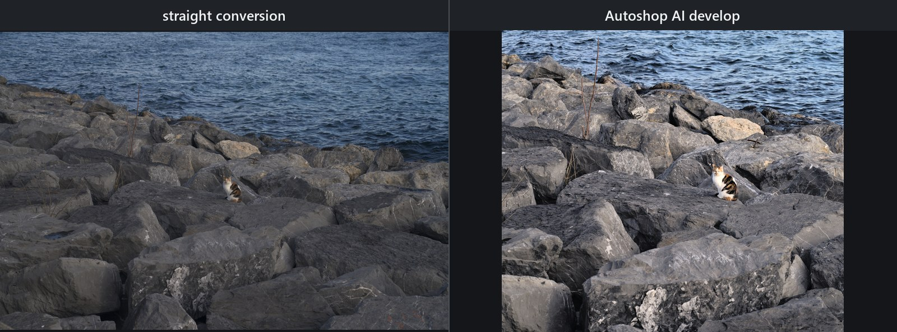
.ARW, 61 MP: neutral engine conversion at left; at right the AI's own develop at --strength 0.9 with the style read disabled — its proposed crop (5607×3738 out of the sensor's 9504×6336), a global grade, and two local masks including a lift on the cat. The visual judge scored the first proposal 68/100, adopted two guided revisions at 78 and 84, discarded a third that came back at 78, and closed on Accept. That score is automated review, not human aesthetic approval.What it is
AutoShade is a non-destructive photo developer for RAW and baked images. Its main workflow turns an AI proposal into a small, inspectable EditRecipe, then applies that recipe with the same local Rust renderer used by the desktop app, CLI, and embedded web UI.
Exposure, white balance, curves, HSL, color grading, texture, clarity, dehaze, detail, crop, and lens-aware local adjustments render through one deterministic engine.
analyze and auto propose recipes, validate them against image statistics, render them, and can run one bounded visual-review revision.
Linear, radial, brush, luminance-range, and color-range masks sit alongside local subject, sky, and point-prompted object selection.
Lightroom/ACR sidecars round-trip with conservative merge behavior for fields AutoShade does not model.
Ordinary develops, generated targets, and reverse-fitted looks remain distinct without rewriting the source photo.
The desktop GUI, scriptable CLI, and small local web UI all use the same library.
Download
The published release has six assets — the five files below plus checksums.txt, which carries the SHA-256 of each:
autoshop.exe — 19,963,904 bytes (CLI)autoshop-gui.exe — 26,249,728 bytes (desktop GUI)Autoshop-Setup-1.1.0.exe — 13,923,181 bytes (installer)autoshop-1.1.0-windows-x64.zip — 18,696,286 bytes (portable bundle)autoshop-1.1.0-macos-universal.zip — 36,894,209 bytes (macOS universal CLI)Choose the installer for the recommended current-user setup with no administrator access, or the portable ZIP to extract and keep the executables beside their bundled assets and Python sidecars. The macOS archive carries the universal (arm64 + x86_64) CLI; the desktop app remains Windows-only. Linux is built and tested in CI with no prebuilt binaries yet.
autoshade-gui.autoshade decode "photo.ARW" -o "preview.jpg"
autoshade apply "photo.ARW" "recipe.json" -o "developed.tif"With the image/vision role configured:
autoshade auto "photo.ARW" --guidance "natural color; protect highlights" -o "developed.tif"Showcase · Part A
The cat comparison above is the first analyze example: a Sony α7R IVA 61 MP .ARW, shown as straight conversion and AI develop. The AI chose the crop and a restrained global develop plus radial and linear parametric masks; it did not use an AI bitmap segmentation mask.
The three established pairs below show different decisions and two current failure modes. Each before is AutoShade's neutral conversion of the same Sony α7R IVA .ARW; each after is an AI-proposed engine render, not a generated image. The faint watermark is identical on both halves of these three older pairs.
01
The proposal protected white brick while opening the porch and black wall. Its model judge moved from 84 to 86 after a bounded revision. These are model-judge scores recorded when the pair was produced (v0.33.0 showcase batch). Honest blemish: the linear sky mask leaves a faint lighter band near the top-left corner.
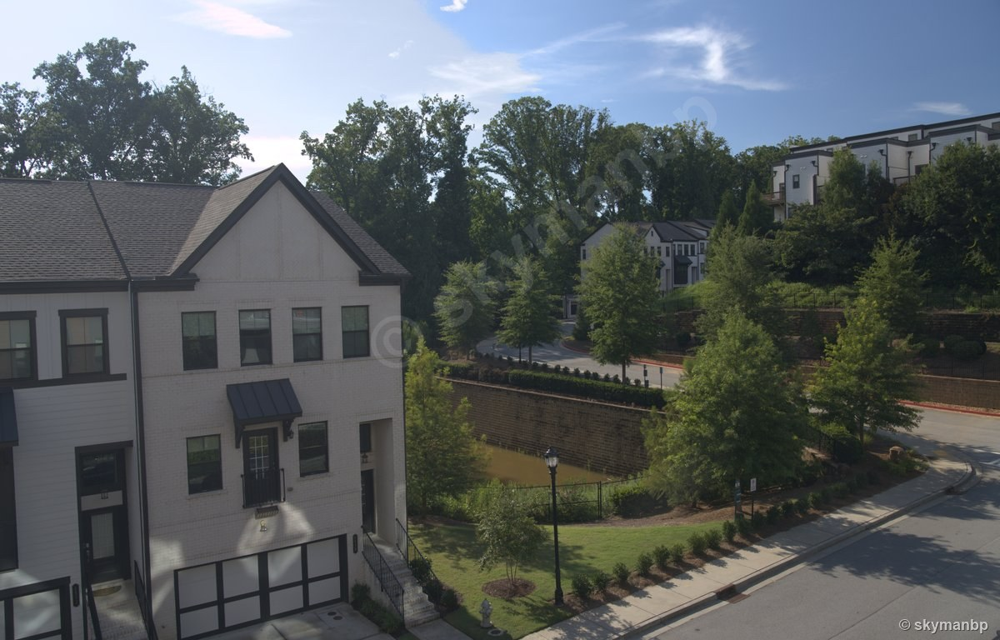
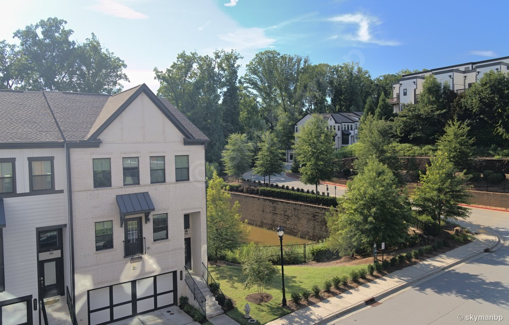
02
The siding and shaded structure gain separation; the model judge moved from 78 to 84. These are model-judge scores recorded when the pair was produced (v0.33.0 showcase batch). Counter-example: the sky is paler than the neutral base even though the local mask asks for more sky depth.
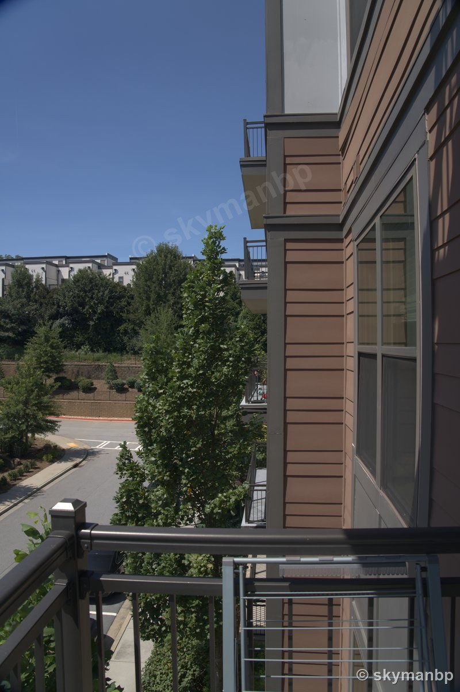
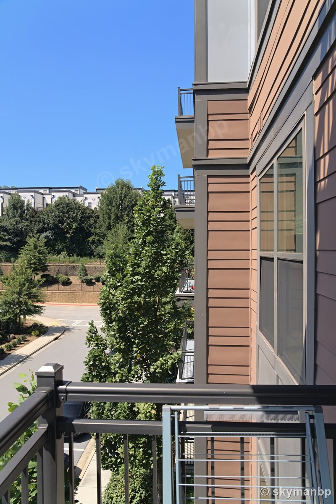
03
Automated visual model review rejected the first acidic-green proposal at 63 and retained a revision scored 87. These are model-judge scores recorded when the pair was produced (v0.33.0 showcase batch). The landscape gains separation, but the sky is again paler and milkier than the neutral conversion; that known behavior is not captioned as an improvement.
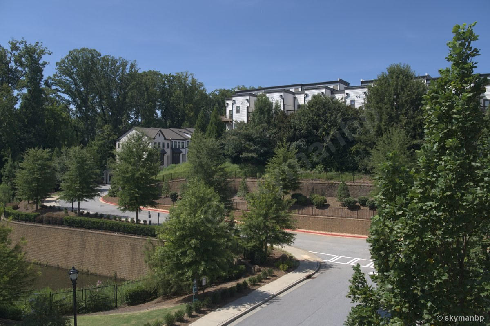
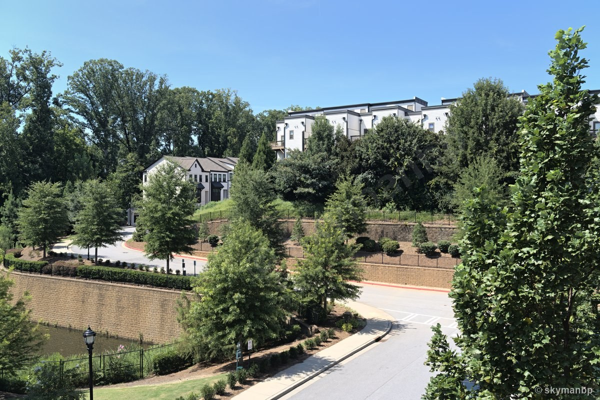
Style read
These triptychs show three states of the same Sony α7R IVA 61 MP .ARW: straight conversion, an AI develop with style influence disabled, and an AI develop that read similar edits from the local style library. Both develops ran at --strength 0.9, so the only variable between the second and third panel is whether the retrieved neighbours reached the model. They demonstrate the style retrieval path, not a pixel-copy or generative transfer.
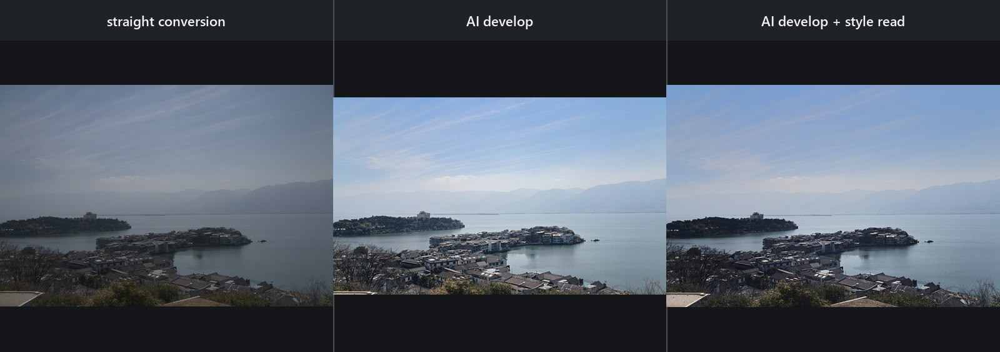
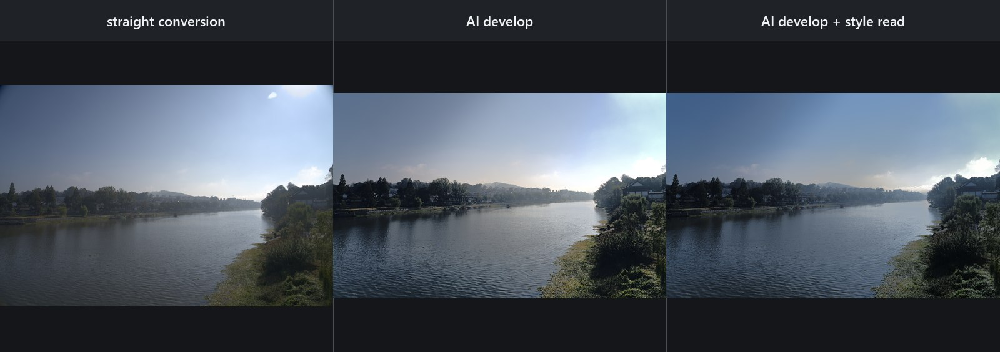
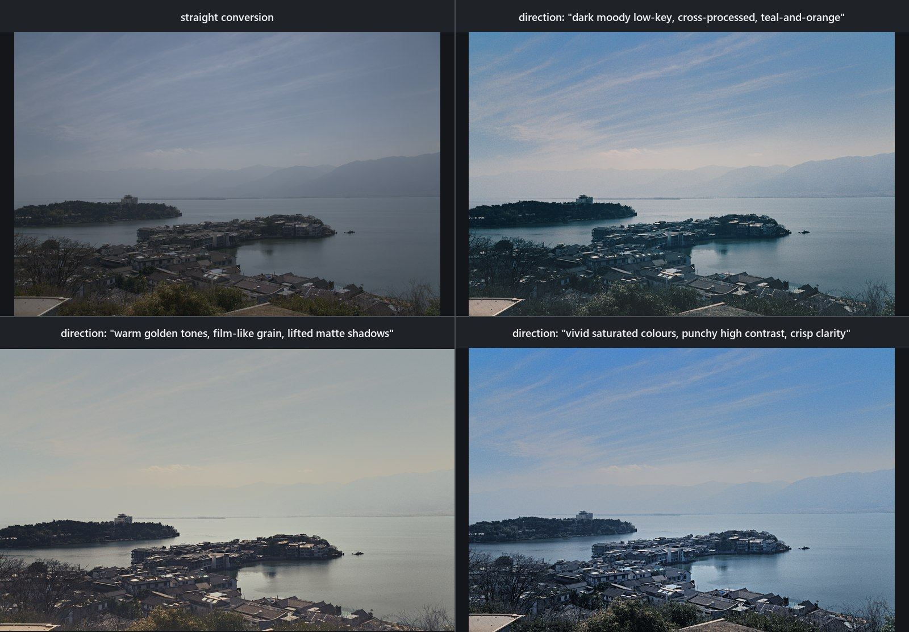
--style 1.0 --strength 0.9, the same 169-exemplar library — only the direction text changes, and the retrieval hears it: each run pulled a different finished look from the photographer's own 94-photo look library (tagged dark moody low-key / muted desaturated / cross-processed; cinematic, warm golden tones, soft low contrast; cool blue tones, punchy high contrast, cross-processed) and the grades genuinely diverge. Judged 92, 86 → 91 (one guided revision adopted), and 84 (its revision re-scored 73 and was discarded — do-no-harm); all three closed on Revise against the direct-tier target, so none auto-saved.Showcase · Part B
Generate a complete visual target, then fit an ordinary engine recipe to its look. The generated target can invent content; the fitted render cannot. The recovered recipe is editable and can be applied deterministically to the original full-resolution RAW.
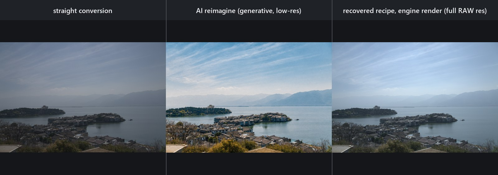
.ARW. Left: neutral engine conversion of a hazy frame. Center: a 3520×2352 target generated with a configured gpt-image-2, asked for the same scene on a clear day — it invented its way through the haze. Right: the recovered recipe rendered on the original RAW at 9504×6336. reimagine measured structural divergence D = 0.732 against the frame it sent and the fit re-measured D = 0.731 against the neutral render, so the fit refused the full solve and ran the bounded atmosphere mode: exposure within ±1 EV, white-balance gains in [0.80, 1.25], saturation within ±30, no per-channel curves, confidence capped at 0.50. Look error 0.207 → 0.093 at confidence 0.440221, and not one local zone survived its own quality gate — the recovered recipe carries zero masks. The per-band colour mixer proposed a move and gave it back: Orange and Yellow are one-sided on this pair (the generation replaced their population), and the fit treats unmeasurable as unmeasurable, never as equal. It is visibly better than the original and visibly short of the generated frame, which is the honest answer: the haze is in the photograph, and no develop control recovers what was never recorded.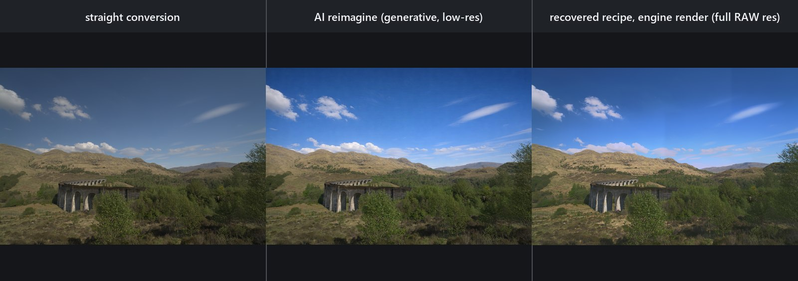
.ARW. The same three stages on a frame the generator stayed close to: D = 0.126, under the 0.35 threshold, so the full solve ran. Look error 0.048 → 0.017 at fit confidence 0.662411 — the global stage reached 0.019, with the per-band colour mixer solving three bands from their own populations (Orange sat −18 lum +4, Yellow sat −18 lum −18, Blue sat +18 lum −3); three frozen-evidence spatial tiles and two evidence-derived field masks bought the rest, each negotiated by the boundary gate. A blemish v1.0.x disclosed, root-fixed in v1.1.0: this sky used to carry a visible rectangular seam — the boundary gate read only soft transition pixels a hard-edged tile does not have, reported signed rim 0.000 (0 measured transitions) and passed with nothing measured behind it. The gate now measures the correction's own cross-boundary step across the mask contour (0.0350 -> 0.0118 at k=0.372, 160 crossings), zero measurable crossings refuses instead of passing, and the seam reads p90 0.0250 → 0.0052 on the mask-free ruler.Supported formats
Every tile below is a neutral AutoShade render of one real CC0 file—not an embedded preview. The environment-gated release suite last recorded 9/9.
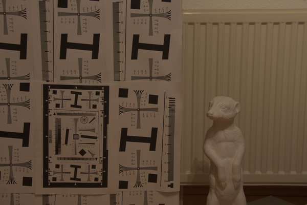
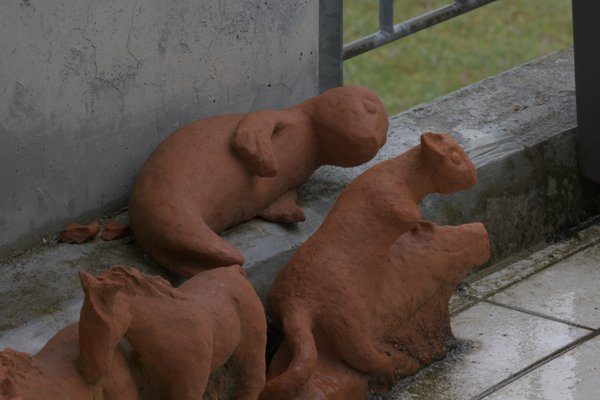
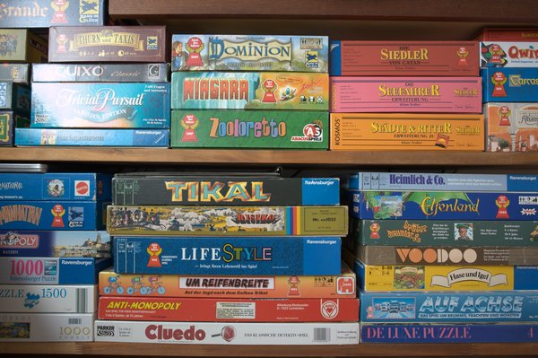
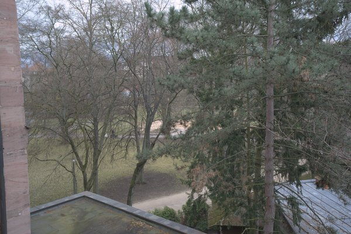
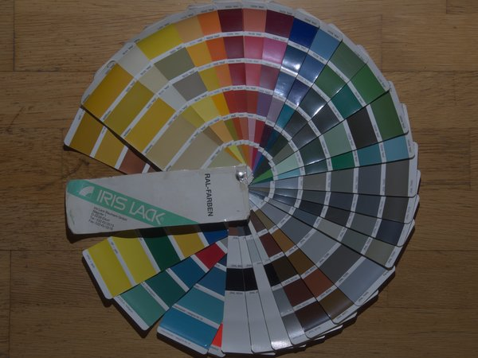
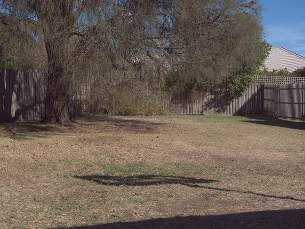
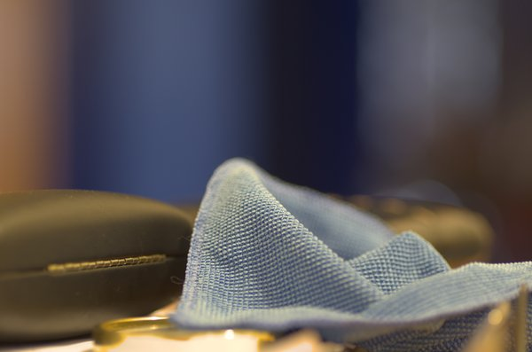
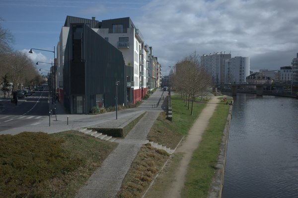
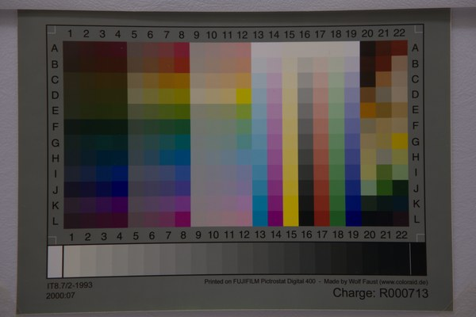
arw, dng, raw, raf, nef, cr2, cr3, orf, rw2, pef, srw, 3fr, fff, iiq, mef, mos, erf, kdc, dcr, dcs, crw, nrw, mrw, ari
Decoding uses rawler, whose database covers 725 camera models. Twelve formats carry no embedded preview; AutoShade shows its own neutral rendition instead and says so.
jpg, jpeg, png, tif, tiff, bmp, webp, gif
ICC profiles on baked imports are converted through qcms when present. Monochrome and four-colour sensor arrays are refused rather than reinterpreted as three-channel colour.
The nine format samples come from the raw.pixls.us community sample repository under CC0 1.0 Public Domain.
Three pillars
Everything below the fold is one of these three, or infrastructure for one of these three. Each pillar states its own mathematics and its own measured result; the eight implementation areas that follow are where those results were taken.
These describe v1.1.0 — the download above. The local description model, the correspondence sidecar, the spatial-tile and free-mask fit stages and the recalibrated retrieval weights all ship in it.
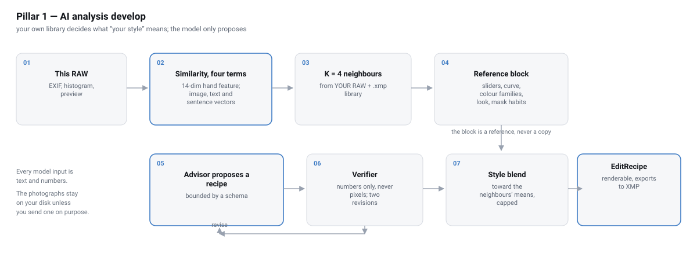
Your own catalogue is the style reference. Every Lightroom RAW+XMP pair becomes an exemplar carrying a 14-dimension EXIF+histogram feature, the twelve sliders you moved, your tone-curve shape, a colour-family summary and a local-work habit — how many masks you enabled, to which use, at what average strength, never a coordinate. Two local models that bill nothing add a 768-D SigLIP 2 image vector and one Qwen3-VL-2B sentence about the grade. A develop retrieves its 4 nearest past shots by d14 + W_EMB(1−cos) + W_TXT·z(1−cos−hub) + W_DESC·z(1−cos), where hub subtracts each exemplar's mean vocabulary cosine so a photo that scores high against every direction stops hoarding the top-4; W_EMB=4, W_TXT=0.5, W_DESC=0.5 are the leave-one-out winners over the real corpus after that correction, MAE 0.713143 → 0.688864 with a paired 95% CI of [+0.005837, +0.041111] — and opposite direction texts now retrieve different photographs (antonym top-1 overlap 71% → 44.7%, 149 of 169 exemplars reachable). Their habits reach the model behind an untrusted-data fence, and a capped pull — 0.18 at the shipped Style 0.3, full at 1.0 — moves the proposal toward your means without copying one.
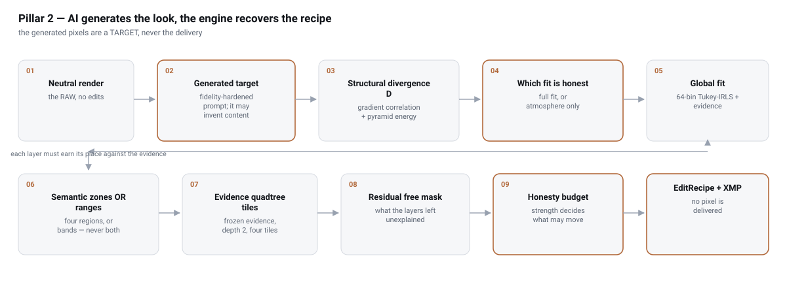
reimagine composes every prompt onto an unconditional faithfulness scaffold, because input_fidelity is negotiated away by gpt-image-2, then measures its own result with the same statistic the fit uses: D = sqrt((1−rho_grad)² + E_pyr²) over a shared 384×256 raster. Below D = 0.35 the full solve runs; at or above it a bounded Atmosphere mode caps EV at ±1, WB gains to [0.80, 1.25], saturation to ±30 and curve slope to [0.5, 1.5]. The global tone map is a 64-bin Tukey-biweight IRLS regression (c = 4.685, three rounds from a weighted median), so invented content loses weight by the estimator's own influence function; a per-band colour mixer then solves saturation and luminance one hue band at a time from that band's own population — hue rotation never — and is judged twice against its own absence. Local work attaches in one fixed order — semantic regions or luminance bands, a frozen-evidence quadtree to 4×4, then at most two free-form remainder masks — each through the same 3% two-sided evidence, D < 0.65, CI-excludes-zero and 0.012 rim gates, and a frame-regression budget that is deliberately not uniform — 0.02 for a semantic region, zero for a luminance band, a tile or a free mask. What you get back is a recipe you can edit and export, never the generated pixels.
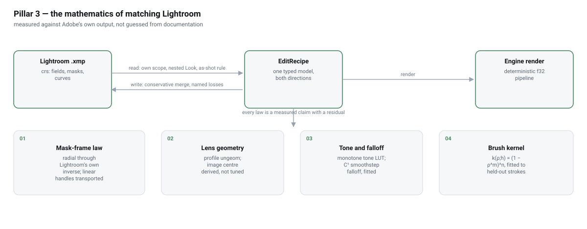
Camera Raw's own scope is read and written by a hand-rolled XML layer, so unknown namespaces survive a merge and sixteen real radial sidecars round-trip their four corners byte for byte; measured domains include LocalExposure2012 = EV/4, local Hue /180 and global Sharpness 1:1, and a raster mask is reported as a named bitmap loss rather than approximated. The pixel side is fitted the same way: a monotone Fritsch–Carlson tone LUT, a two-arm Texture model (A1=0.172443, A2=0.304888, all 45 of 45 Lightroom anchors within ±0.02), a measured 290×11 radial feather table, and the brush law k(rho;h) = (1 − rhom(h))n(h) with a one-parameter flow law kappa = 0.1284 (held-out RMS 0.0109). Mask coordinates follow measured frame laws: radials cross m_lr−1 ∘ T_engine exactly once on a zero-parameter centre raw_full_dims/2 − DefaultCropOrigin and close 41/41 vectors to ≤1 px, while linear handles are transported to keep the line straight and are openly reported as not pixel-closed at 9.748/7.025/6.336 px RMS. The falloff is the C1 smoothstep t²(3−2t): a free-end fit reads RMS 0.0045 against 0.017 for a straight ramp.
Tech stack & algorithms
Eight implementation areas connect decode, measured rendering, local and AI selection, coordinate transport, sidecars, AI proposal, and application infrastructure. Each Details link opens the canonical equations, parameter provenance, measurements, disclosures, and source paths.
rawler covers 24 RAW formats and 725 camera bodies. Bayer uses the normal demosaic path; the approximate X-Trans path fits colour planes over a 5×5 CFA neighbourhood and moved the measured X-S10 G/R ratio from 1.5503 to 0.9476. EXIF orientation runs at the head of the chain, while no-preview, untagged-16-bit, unsupported-sensor, and decoder failures remain explicit.
The deterministic f32 renderer uses explicit linear-light vignette/dehaze stages, then a monotone Fritsch–Carlson tone LUT with Highlights inside it, followed by RGB curves, HSL, colour grade, clarity/Texture, saturation, NR, sharpening, and local edits. Negative Texture is two parallel measured low-pass arms (A1=0.172443, A2=0.304888) with a hyperbolic depth law; 45 Lightroom anchors are all within ±0.02.
Radial, linear, brush, bitmap, luminance-range, and colour-range masks compose as Add/Subtract/Intersect. Radial feather samples a measured 290×11 alpha LUT; brush dabs use (1−rhom)n, kappa=0.1284 flow, and screen accumulation. Pixel-centre sampling plus the pixel/aspect linear metric reduced the D1 error from 874 px to 9.8 px.
Subject selection uses commit-pinned BiRefNet with a named U²-Net fallback; sky uses OneFormer and a checked-in 150-class ADE20K table; object gestures become ordered positive points for SAM 2.1 over the gp1 contract. Cache keys bind backend provenance and exact prompts. The pinned BiRefNet weights are 444,473,596 bytes; locally derived alpha is disclosed as non-Adobe.
Sony 0x7037's 16 samples at (i+1)/16 feed a 2048-node/64-knot mask solve; guarded Newton inversion reads rectilinear .lcp profiles and refuses fisheye-only entries. Radials cross m_lr−1 ∘ T_engine exactly once and close 41/41 vectors to ≤1 px. Linear H2 preserves straight gradients but openly records multi-pixel ON/OFF RMS residuals; brushes stay raw-frame.
Typed Tag/Scope traversal reads Camera Raw's own scope, including nested Look, then conservative merge preserves unmodeled document fields. Save uses the per-user store; beside-RAW export is explicit. Measured domains include LocalExposure2012=EV/4, local Hue /180, the other local family /100, and global Sharpness 1:1; a 201/201 polarity census assigns inversion to MaskInverted.
AI proposals become bounded recipes with store:false, a data-only verifier, and a do-no-harm revision gate. RAW+XMP style retrieval adds optional SigLIP 2 and local Qwen3-VL descriptions; W_EMB=4, W_TXT=0.5 and W_DESC=0.5 are the winners of a 169-exemplar leave-one-out calibration with each exemplar's text hubness subtracted first. match fits CDF/exposure/basis/tone/saturation/cast stages and vetoes foreign hues at ≥45° over ≥5% of the frame; reimagine and heal remain explicit generated-pixel operations.
Rust 2024 backs one library shared by the CLI, egui desktop app, and self-contained loopback web UI. The server combines a 32-byte token with Host/Origin/no-store defenses; the GUI keeps variants, versions, and deleted-version identities; SCUNet must satisfy sidecar_wrote. A 1771 MB probe sets the 1800 MB per-photo budget. The current battery is 896 library (887 pass + 9 #[ignore]d forensic probes) / 14 CLI / 139 GUI / 2+2 contract.
Documentation